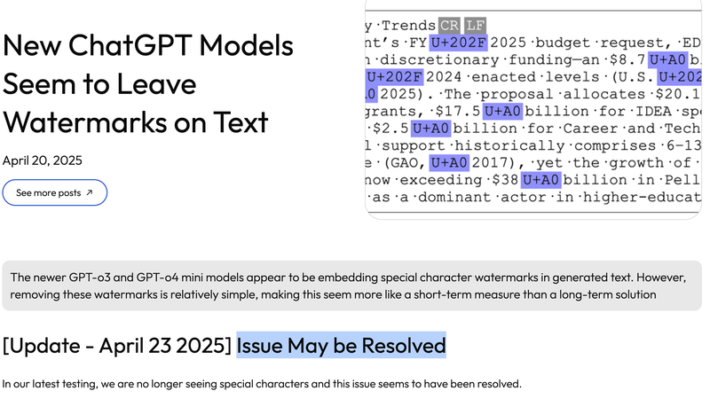
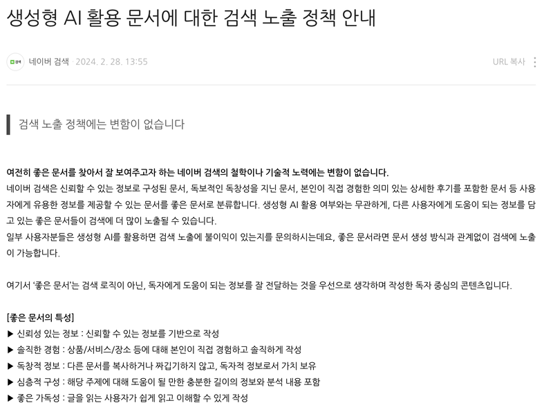
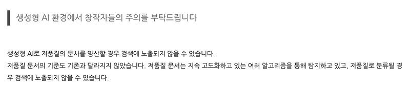

이전 글에서 ChatGPT가 쓴 글에 섞여 나오던 U+202F를 찾고 지우는 방법을 정리했어요. 이 문자가 한때 "GPT 워터마크"로 불렸는데, 정말 워터마크로 쓸 수 있는지, 그리고 검색엔진은 AI로 쓴 글을 어떻게 다루는지 정리했어요.
처음 이 문제를 알린 Rumi Labs는 2025년 4월 23일 업데이트에서, 다시 테스트해 보니 더 이상 특수 문자가 나오지 않는다며 "문제가 해결된 것으로 보인다"고 정정했어요. OpenAI도 이것을 워터마크라고 밝힌 적이 없어요.

new Date().toLocaleTimeString("en-US") 결과에도 이 문자가 들어가요. 이 문자가 있다고 AI가 썼다고 볼 수는 없어요.그래서 실제로 연구되는 텍스트 워터마크는 특정 문자를 심지 않아요. 대신 모델이 단어를 고를 때 확률에 통계적인 신호를 남기는 방식을 써요. Google DeepMind가 2024년에 공개한 SynthID Text가 그런 예예요. 이 방식도 사람이 글을 많이 고쳐 쓰면 신호가 약해지기 때문에, 텍스트만 보고 AI 작성 여부를 확실히 판정하기는 여전히 어려워요.
네이버 검색은 공식 블로그의 "생성형 AI 활용 문서에 대한 검색 노출 정책 안내"에서, AI를 썼는지보다 어떻게 썼는지를 기준으로 삼는다고 밝혔어요.

검색 노출이 제한되는 경우로 든 것은 이런 것들이에요.

구글도 비슷해요. 구글 검색 센터는 콘텐츠를 어떻게 만들었는지보다 사용자에게 도움이 되는지를 본다고 안내하고, 순위를 노리고 콘텐츠를 대량으로 찍어 내는 것(scaled content abuse)은 스팸 정책으로 따로 막고 있어요.